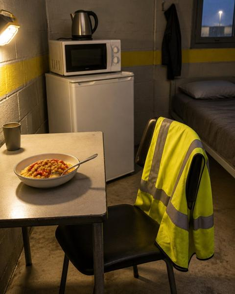
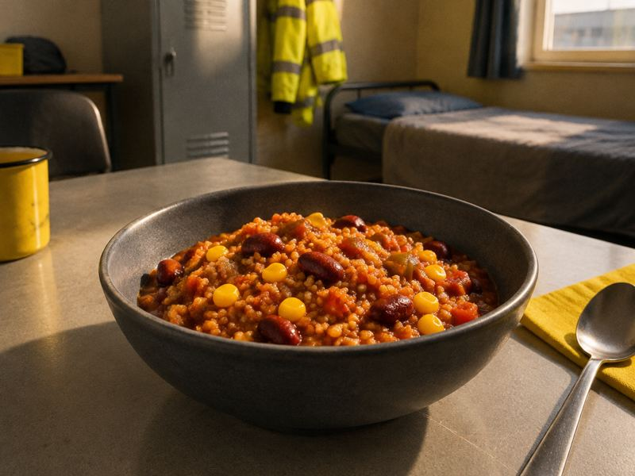
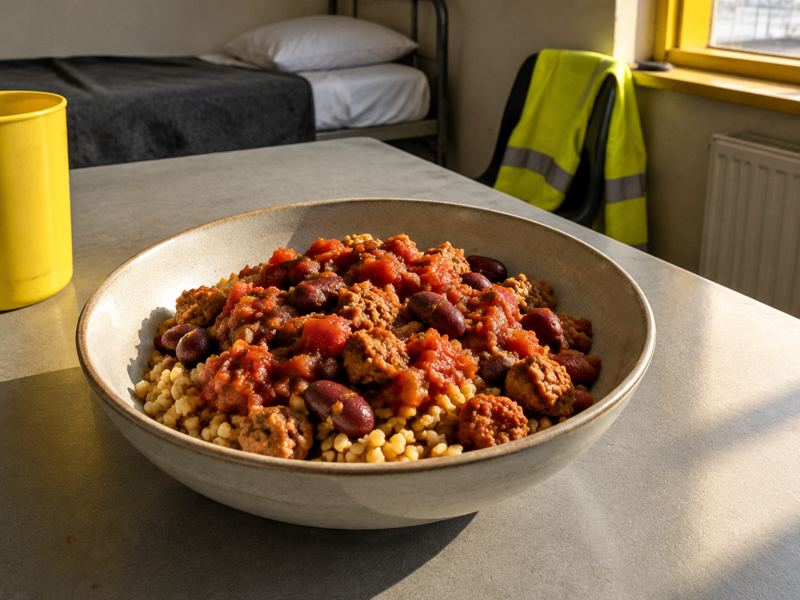
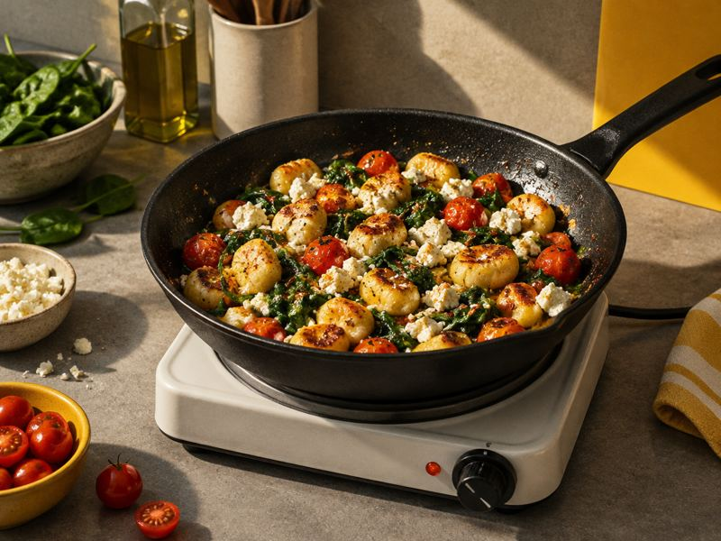
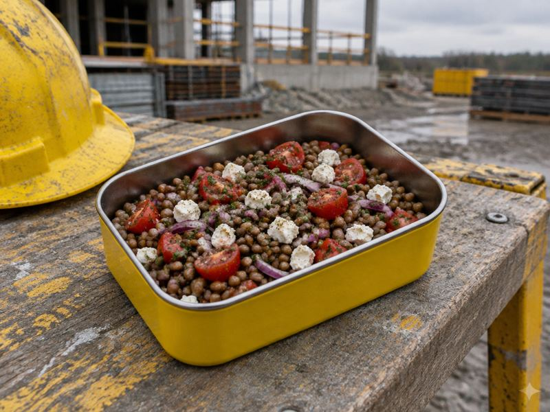
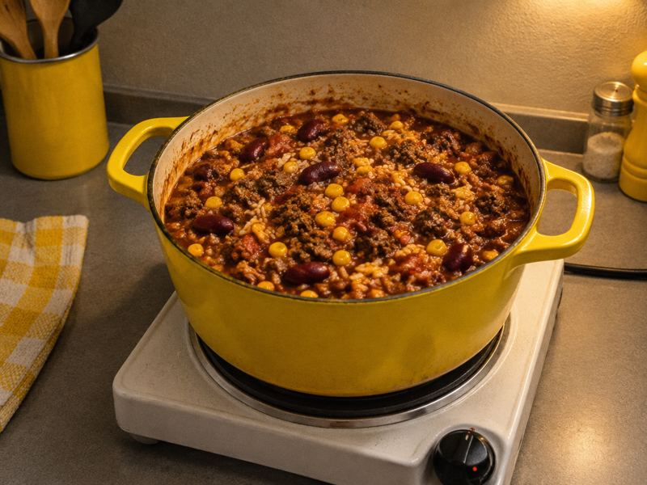
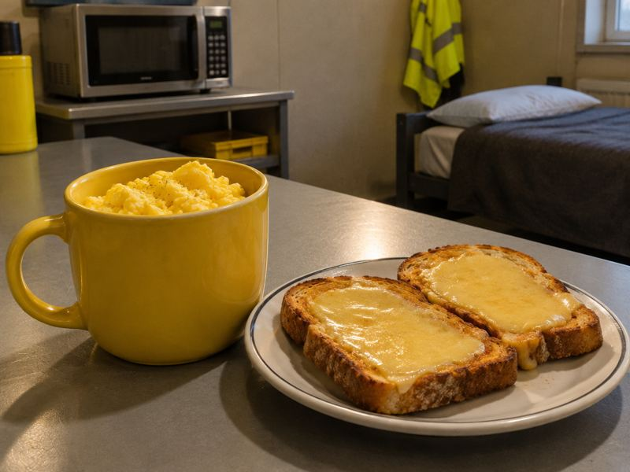

Ausstattung erst vor Ort klar
Mal Kochplatte, mal nur Wasserkocher, mal ein Kühlschrank für alle. Der Plan richtet sich nach dem, was diese Woche dasteht.
Was steht im Zimmer?
Kreuz an, was dasteht: Wasserkocher, Mikrowelle, Kochplatte. Zimmerherd plant die Woche, schreibt den Einkaufszettel für den Laden deiner Wahl und sagt, was wie lange im Kühlschrank hält. Nur Wasserkocher, Mikrowelle und Kühlschrank? Dann gehen 59 unserer 195 Rezepte, ganz ohne Herd.
Ohne Konto. Deine Eingaben bleiben auf deinem Gerät.

Mal Kochplatte, mal nur Wasserkocher, mal ein Kühlschrank für alle. Der Plan richtet sich nach dem, was diese Woche dasteht.
Viele Gerichte brauchen zehn Minuten Arbeit oder weniger. Die Box für morgen entsteht gleich mit.
Der Einkaufszettel ist nach Abteilungen sortiert, mit geschätzten Kosten für Aldi, Lidl, Netto, Penny, Rewe, Edeka oder Kaufland.
Tipp an, was in deinem Zimmer steht. Wir zählen live, wie viele Rezepte damit gehen.






Alle Preise und Bedingungen · Kündigen über „Verträge hier kündigen“, ohne Login, wirksam zum Ende der Laufzeit.
Die Tabelle „welche Geräte, wie viele Rezepte“, Etiketten für die Boxen, die Lagerkarte und eine Textvorlage für die Frage an den Vermieter. Zum Ausdrucken, falls im Zimmer kein Netz ist.
Nein. Der Planer läuft im Browser. Deine Eingaben bleiben auf deinem Handy.
Dann plant Zimmerherd nur Rezepte, die damit gehen. Mit Kühlschrank im Zimmer sind das 47 von 195.
Es sind Schätzwerte je Laden, keine Tagespreise. Ein Teil ist per Stichprobe vom 29.10.2026 geprüft.
Ein Tagesplan ist gratis. Für ganze Wochen gibt es den Montage-Pass für 3 Monate oder Plus im Abo.